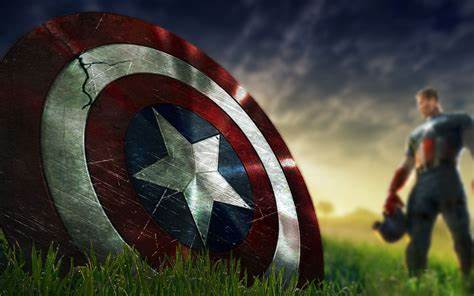

Shield
Captain America's shield is his main weapon. The best known of his shields is a disk-shaped object with a pentagram design at its center, within concentric blue, red, and white circles. This shield is composed of a unique combination of Vibranium, alloy steel, and an unknown third catalyst, which has never been duplicated, called Proto-Adamantium. It is practically indestructible.